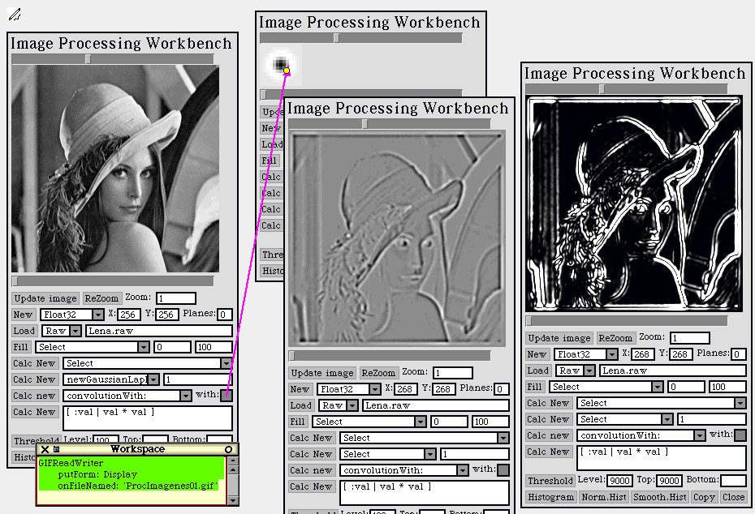

Introducción
al Procesamiento de Imágenes
Introducción
al Procesamiento de Imágenes
Volver al estudio de Juan


Trabajos Prácticos 1a y 1b
Ejercicio A1
Se solicitó implementar suma y resta punto a
punto de imágenes, con distintas posibilidades para alinearlas.
Ejercicio A2
Se solicitó implementar la operación de
convolución entre dos imágenes. Debido a lo costoso que resulta
la ejecución de esta operación en Smalltalk (que es un lenguaje
interpretado), se utilizó la generación automática
de código C a partir del código Smalltalk ya implementado
y probado. Este código C fue compilado como una dll que es llamada
automáticamente de estar disponible. El resultado es bajar tiempos
que iban de 2 a 10 minutos, y que ahora son de 2 a 10 segundos.
Ejercicio A3
Se solicitó implementar la suma, resta, multiplicación
y división de una imagen por un escalar.
Ejercicio A4
Se solicitó implementar la operación de
Umbral.
Ejercicio A5
Se solicitó implementar la binarización
de una imagen a partir de un Umbral.
Ejercicio A6
Se solicitó poder calcular la cantidad de píxeles
que se encuentran entre dos valores de un histograma.
Ejercicio A7
Se solició poder aplicar una función al
valor de los pixeles de una imagen y/o un histograma, calculando la nueva
imagen y/o histograma resultante.

Ejercicio B1
Se solicitó implementar el Histograma Acumulado
de una Imagen. Un Histograma Acumulado, para cada valor de pixel, indica
cuantos pixels contiene la imagen de valor menor o igual a él. La
implementación realizada es calculándolo a partir del Histograma
convencional.
Ejercicio B2
Se parte de una imagen, su histograma, su histograma
acumulado, y una función que toma valores de pixels y devuelve valores
de pixels. Se solicito calcular y mostrar el histograma acumulado, el histograma
normal y la imagen que resultarían de aplicar la función
a cada uno de los pixels. La implementación realizada consiste en
poder aplicar cualquier función tanto a los histogramas como a la
imagen. De esta manera, si se desea el histograma acumulado resultante,
se aplica la función únicamente al histograma acumulado original.
Si además se desea el histograma convencional resultante, se debe
aplicar la función al histograma convencional original, lo que permitirá
posteriormente obtener también el nuevo histograma acumulado. Si
además se desea la imagen resultante, entonces se aplicará
la función directamente a la imagen original. De la nueva imagen
podrán obtenerse después el nuevo histograma, y el nuevo
histograma acumulado. Se incluyó en la interfaz al usuario tanto
la posibilidad de ingresar por teclado la función a utilizar (en
la forma de un bloque Smalltalk), como también un conjunto de funciones
ya incluídas, y accesibles por un menú.
Ejercicio B3
Se solicitó implementar la convolución
de una imagen por otra, tanto para valores de pixels enteros como reales.
Se realizó la implementación correspondiente, y se incluyeron
los ejemplos solicitados juntamente con el código de la implementación.
Para facilitar preparación de las imágenes a ser usadas como
filtro, se incluyó en la interfaz al usuario la posibilidad de ingresar
directamente los valores de los pixels en una matriz cuadrada, similar
a una planilla de cálculo. Se observó que los filtros pasa-bajos
suavizan las imágenes, haciéndolas borrosas; y los pasa-altos
enfatizan los bordes.

Ejercicio B4
Introducción
Se solicito aplicar un conjunto de filtros estándar
a imágenes de prueba, observar el resultado y sacar conclusiones.
Uno de ellos es el Filtro de la Mediana, para una ventana de n x m. Los
demás son convoluciones.
Comentarios
Filtro de la Mediana
Se implementó el Filtro de la Mediana para una
ventana de n x m. Se observó que se eliminan los detalles de tamaño
menor a la ventana. Se suavizan los bordes de las áreas de un determinado
color, pero no los colores en sí. El resultado es que las áreas
de cada color se vuelven más evidentes. Algunas imágenes
quedan similares a los mapas geográficos donde se colorea con distinto
color las zonas de distinta altura. Sin embargo, si la imagen original
tiene una gran cantidad de tonos diferentes, este defecto no es visible,
y se eliminan imperfecciones pequeñas y ruido.
Filtros pasa-altos
Los restantes filtros son todos pasa-altos. Ayudan a
detectar bordes. Las zonas que en la imagen original son de un tono uniforme
(cualquiera sea) se transforman en un gris mediano (valores cercanos al
cero). Los bordes, zonas donde hay un cambio abrupto de nivel de luminosidad,
son enfatizados. Algunos resultan negros (valores negativos) y otros blancos
(valores positivos). Otros bordes no son enfatizados y quedan grises (valores
cercanos al cero). Qué bordes son enfatizados y cómo es lo
que diferencia a cada uno de los filtros solicitados.
Esta alteración de los bordes produce una
ilusión de relieve. La imagen parece hundirse y sobresalir, iluminada
por una fuente de luz. Los aclarados parecen ser más iluminados,
y los oscurecidos parecen sombras. Las zonas que en la imagen original
eran más oscuras parecen hundirse, mientras que las más claras
parecen sobresalir. Es como considerar a la imagen como una superficie
bidimensional en un espacio tridimensional, siendo el valor del pixel la
altura de la superficie en ese punto. Cada filtro parece produce la fuente
de luz en un lugar distinto. Esto hace que cambien los bordes iluminados
y las sombras. En general, los bordes perpendiculares a la fuente de luz
son enfatizados. Aquellos que tengan zonas oscuras (que se hunden) del
lado de la luz, se aclaran. Aquellos que tengan zonas claras (que sobresalen)
del lado de la luz, se oscurecen, al quedar en la sombra. Los bordes paralelos
a la fuente de loz no se enfatizan, y se vuelven invisibles. En general,
la fuente de luz ilumina desde la zona donde estén los valores positivos
hacia la zona donde estén los valores negativos del filtro.
Roberts
La fuente de luz se ubica arriba a la derecha en un caso, y arriba a la
izquierda en el otro. En ambos casos ilumina en dirección diagonal.
Prewitt
En un caso la iluminación es desde arriba, y en el otro desde la
derecha.
Sobel
También la iluminación es desde arriba en un caso, y en el
otro desde la derecha.
Compass Operator
Hay cuatro casos. Iluminación desde arriba, desde la derecha, desde
arriba a la derecha y desde arriba a la izquierda.